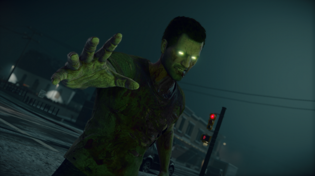

STEEP
Exploring the expansive, frozen Alps of Steep by means of snowboarding, skis, paragliding, or wingsuit is to tour one of the most diverse and visually interesting open worlds I’ve ever gotten lost in - especially in a sports game. Not all of the featured activities are equally fun, and I was disappointed in the lack of statistical customization, but the array of challenges and their satisfying physics that strike a nice balance between realistic and arcadey rarely left me without something new and exciting to try.
Steep is based around a “Play Your Way” philosophy that, in the short term, works well. You can pick from skiing, snowboarding, paragliding, and wingsuit flying (which are all distinct except that snowboarding and skiing share the same courses) and progress through a number of different skill areas geared toward different playstyles. There are rewards for narrowly avoiding obstacles, pulling off complex tricks, exploration, riding creative routes down mountainsides, and even crashing into things or falling on your face and breaking every bone in your body in spectacular fashion. That one is especially entertaining, much in the same way as watching Homer Simpson repeatedly fall down Springfield Gorge.

The problem is that if you decide you like certain playstyles more than others, it can be very difficult (if not impossible) to level up and unlock new peaks. For example, I decided fairly early on that I didn’t like paragliding at all. Slowly drifting around dangling from a parachute is the least intense, least realistic, and least fun out of the four sports, and is mainly useful for scouting out new ski runs and enjoying the scenery at a leisurely pace. So I played my way, and had a good time… until I hit a point near the end where I was short on XP to unlock the final peak and had to go back and run through all of those paragliding challenges I’d skipped. So it’s really: “Play Your Way Unless You Want to Finish the Game.”
I enjoyed just about every minute I spent playing Steep. Grandiose, attractive environments serving as the backdrop to varied, intense challenges are enough on their own to make this wintry playground somewhere I was always delighted to go back to and spend more time in - a feeling I still have even after finishing the bulk of the content, though the lack of mechanical customization and progression makes it harder to find reasons to return. Likewise, the core snowboarding and skiing events are enjoyable enough to easily forgive mediocre elements, like the slow and sleepy paragliding mode, that feel like needless gimmicks. I just wish the latter weren’t mandatory.
Other Reviews
HALO WARS 2

FOR HONOR

SNIPER ELITE 4

DEAD RISISNG 4
